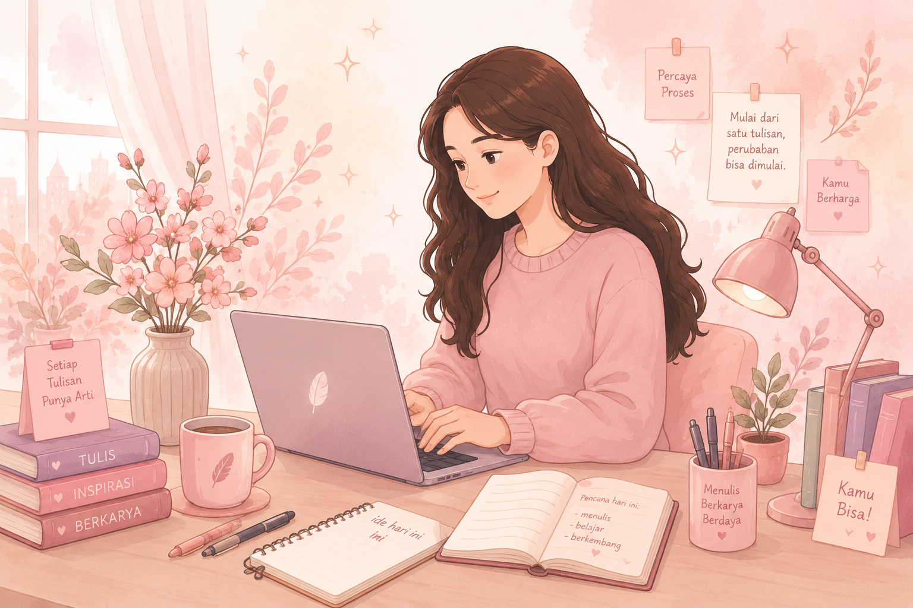

Menulis. Berkarya. Berdaya.
Banyak perempuan memiliki kemampuan menulis, tetapi belum menyadari bahwa keterampilan tersebut dapat menjadi peluang karier di era digital.
WriteHer hadir sebagai teman belajar berbasis AI untuk membantu perempuan mengembangkan potensi, membangun portofolio, dan menemukan peluang kerja melalui kepenulisan.
Temukan pengalaman yang menyenangkan dalam berkarya bersama WriteHer, dan mulailah perjalananmu menuju kesuksesan di dunia menulis digital.

Mulai dari Ceritamu
Temukan jalur karier menulis digital yang sesuai dengan minat dan tujuanmu.
Mulai EksplorasiMembuka Akses Perempuan ke Peluang Kerja Digital
Banyak perempuan memiliki kemampuan menulis, bercerita, dan menuangkan ide kreatif. Namun, tidak semua memiliki akses, arahan, atau kepercayaan diri untuk mengubah kemampuan tersebut menjadi peluang karier di era digital.
Di sisi lain, perkembangan ekonomi digital telah membuka berbagai profesi baru, seperti content writer, copywriter, script writer, technical writer, hingga novel writer. Sayangnya, informasi mengenai jalur karier tersebut masih belum mudah dijangkau oleh banyak perempuan.
WriteHer hadir sebagai AI Writing Companion yang membantu perempuan mengenali potensi kepenulisannya, mengeksplorasi berbagai pilihan karier, memperoleh rekomendasi belajar yang sesuai, serta membangun langkah awal menuju dunia kerja digital.
Yang dapat kamu lakukan di WriteHer:
- Belajar dasar kepenulisan digital.
- Mendapat rekomendasi jalur karier berbasis AI.
- Mengembangkan portofolio menulis secara bertahap.
- Menjelajahi peluang kerja dan komunitas penulis.
57%
Kesenjangan Akses Internet Perempuan
57% perempuan di dunia menggunakan internet, dibandingkan 62% laki-laki. Kesenjangan akses dan keterampilan digital masih menjadi hambatan bagi perempuan untuk memanfaatkan peluang ekonomi digital.
Source: ITU<30%
Partisipasi Perempuan di Dunia Kerja Digital
Di Indonesia, kurang dari 30% partisipasi tenaga kerja di sektor Teknologi Informasi dan Komunikasi berasal dari perempuan. Hal ini menunjukkan masih terbatasnya keterlibatan perempuan dalam ekonomi digital.
Source: ILOUNESCO
Pentingnya Literasi digital Perempuan
UNESCO dan UN Women menekankan bahwa peningkatan literasi digital perempuan merupakan salah satu kunci untuk memperluas akses kerja, meningkatkan pemberdayaan ekonomi, dan mengurangi kesenjangan gender di era digital
Source: UNESCOTemukan Peluang Pekerjaanmu
Dunia kepenulisan menawarkan banyak peluang, mulai dari menulis artikel hingga mengembangkan cerita kreatif. Jelajahi berbagai profesi berikut dan temukan yang paling sesuai dengan minatmu.
Content Writer
Membuat artikel informatif untuk website, blog, dan media digital.
SEO • Artikel • RisetCopywriter
Menulis kalimat promosi yang menarik untuk bisnis dan pemasaran digital.
Copywriting • Branding • MarketingNovel Writer
Mengembangkan cerita fiksi menjadi novel digital yang menarik pembaca.
Storytelling • Plot • CharacterScript Writer
Menulis naskah film, drama, video pendek, atau konten kreatif.
Screenplay • Dialog • SceneTechnical Writer
Menyusun dokumentasi dan panduan yang mudah dipahami pengguna.
Dokumentasi • Teknologi • StrukturAI Content Specialist
Menggunakan AI untuk membantu proses riset dan penulisan konten.
Prompting • AI Tools • EditingMasih Bingung Memilih?
Setiap perempuan memiliki minat, pengalaman, dan potensi yang berbeda. Ceritakan apa yang kamu sukai, lalu biarkan WriteHer AI membantumu menemukan jalur kepenulisan yang paling sesuai.
Mulailah perjalananmu untuk Menulis. Berkarya. Berdaya.
✨ Tanya AI Sekarang ✨Bingung Mau Mulai dari Mana?
Tidak apa-apa kalau kamu belum tahu harus mulai dari mana. Ceritakan apa yang ingin kamu ketahui, lalu AI WriteHer akan membantu memberikan saran yang mudah dipahami.
💗 WriteHer AI
Ceritakan minat, pengalaman, atau tujuanmu dalam dunia kepenulisan. WriteHer AI akan membantumu menemukan jalur karier yang sesuai dengan potensi dan minatmu.